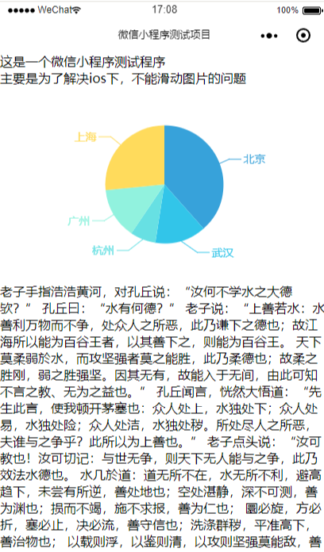
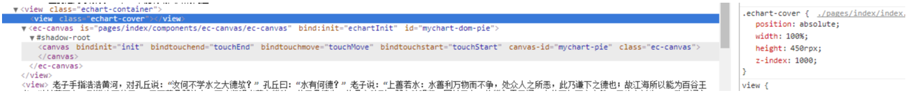
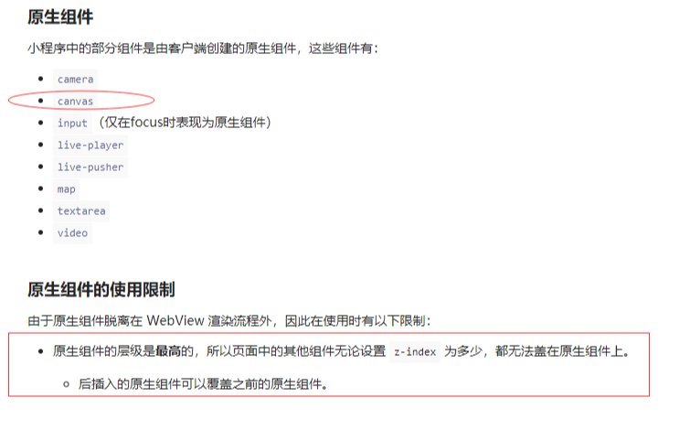

这个问题的现象说起来很简单。
小程序页面中有一篇很长的文章，内部有一个Echarts图表，手指上下滑动观看内容。
但是手指滑动区域在Echarts图表上时，页面却不能滑动了。
如下图：

因为在小程序上渲染图表用到的是echarts-for-weixin这个组件,而这个组件确实不支持一些Echarts功能。
所以最开始我怀疑是这个组件的问题，认为它把我的滑动事件给吞了。
为了确认这个问题，我直接在这个组件ec-canvas旁加了个兄弟节点view，然后用绝对定位将其覆盖在ec-canvas，这样滑动的时候就会滑动到我的view上而不是ec-canvas。

但是结果在ios下，还是不能滑动。
于是我给这个view的加了个背景色，在ios下的真机调试时发现，ec-canvas组件还是在view上面。
不论是加大view上的z-index值，还是将absolute改为fixed，反正ec-canvas组件所渲染的图表就是在view上面，而没有被view遮挡。
这个ec-canvas组件是如此出众，无论什么都遮盖不了它的风采。
而导致它如此出众的原因就是：图表是一个canvas组件，而小程序中canvas是一个原生组件。
接下来就让我们看看小程序中使用原生组件的限制。
这里先附上链接：小程序原生组件使用限制。
让我们看看关键的地方：

也就是说canvas这类原生组件就是比view这种非原生的组件层级高。
为了解决原生组件层级最高的限制。小程序专门提供了 cover-view 和 cover-image 组件，可以覆盖在部分原生组件上面。这两个组件也是原生组件。
我将原来的兄弟view组件替换为了cover-view组件，然后希望达到可以滑动的效果。
虽然此时cover-view组件已经可以覆盖在canvas上了，但是依然不能滑动。
关于这个问题，我们可以认为小程序的所有组件都是放在webview中，而原生组件在webview中用的是占位符。
在滚动时，获取原生组件占位符的位置，再改变原生组件的位置。（如果仔细观察，会发现这些原生组件有时会产生一些奇怪的抖动，这一点可以佐证这个论点。）
所以ios下，我们手指在canvas和cover-view这类原生组件上滑动时，事件是不会传导到webview上的，页面也就不会滑动。
对于这个问题，因为我这边和echarts的交互比较少，所以我的解决方案就是在echarts渲染完毕后将它替换为一张图片。
如果我更新了数据，那么就重新放出echarts，等它渲染完毕后，再次替换为一张图片。
由于公司代码不适合放出，所以我搞了个简易版的代码放在这里。
wxml文件关键代码：
<view class="echart-container">
<image wx:if="{{echartImgSrc!==''}}" src="{{echartImgSrc}}" class='echart-img'></image>
<ec-canvas wx:if="{{echartImgSrc===''}}" id="mychart-dom-pie" canvas-id="mychart-pie" ec="{{ ec }}" bind:init="echartInit"></ec-canvas>
</view>js文件关键代码：
Page({
data: {
ec: {
},
echartImgSrc: ''
},
initChart(canvas, width, height) {
const chart = echarts.init(canvas, null, {
width: width,
height: height
});
canvas.setChart(chart);
var option = {
// ...
};
chart.on('finished', () => {
this.selectComponent('#mychart-dom-pie').canvasToTempFilePath({
success: res => {
this.setData({
echartImgSrc: res.tempFilePath
})
},
fail: res => console.log('转换图片失败', res)
});
})
chart.setOption(option);
return chart;
},
echartInit(e) {
this.initChart(e.detail.canvas, e.detail.width, e.detail.height);
}
});总的来说，解决起来还算简单。
但是对于和Echarts有很多交互的场景，这个方案就未必那么好实现了。
从这个问题入手，我对微信小程序原生组件的玩法有了更多的认识。
更深入一点的认识就是，微信小程序当下对原生组件的这种处理更像是在一件普通的布衣上贴上貂皮补丁。
虽然考虑到了原生组件所带来的性能优势，但是同样也会引发大量的问题，对于这件衣服的整体表现而言这些貂皮补丁恐怕并不见得是件好事。
希望以后小程序能从根本上解决这种问题吧。